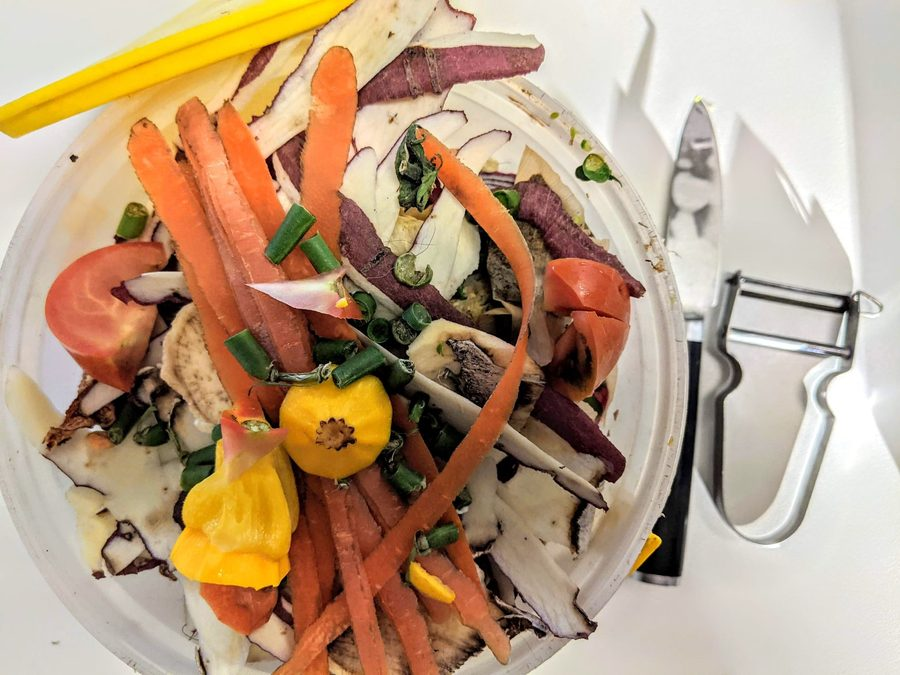

Talos de couve, cascas de cebola e o caldo caseiro que rende 2 litros
Como virar 300g de sobra que iria pro lixo em 2 litros de caldo caseiro, em porções prontas pra congelar.

Toda semana a mesma cena se repete na minha bancada: talo de couve indo pro lixo, casca de cebola direto pra lixeira, ponta de cenoura descartada sem nem pensar. Até eu parar e fazer as contas — numa semana comum de cozinha em casa, sobram facilmente 300g desses restos. E 300g de talo e casca, bem aproveitados, viram 2 litros de caldo caseiro que dá pra usar em arroz, sopa, risoto e refogado por semanas.
Não é receita chique nem exige nada além do que já sobra na sua cozinha. É método: separar o que serve, cozinhar pelo tempo certo, coar bem e guardar em porções que fazem sentido pro seu uso. Vamos por partes.
O que entra no saco de aparas (e o que não entra)
Nem toda sobra vira caldo bom. Algumas deixam o líquido amargo, turvo ou com gosto forte demais. A regra que uso: se o vegetal é da família das couves, cenouras, cebolas e alho-poró, o talo e a casca quase sempre servem. Se é crucífera de gosto muito forte (como sobra de brócolis cru em excesso) ou casca de vegetal com terra mal lavada, fica de fora.
Vai no caldo
- Talos de couve, picados em pedaços de 3-4 cm
- Cascas de cebola (a casca seca dá cor dourada ao caldo)
- Pontas e cascas de cenoura, bem lavadas
- Parte verde-escura do alho-poró, que geralmente é descartada
- Talos de salsinha e coentro (se sobrarem)
- Cascas de alho, com moderação
Fica de fora
- Cascas de batata muito verdes ou com brotos
- Folhas murchas ou com sinal de mofo
- Excesso de couve-flor ou repolho crus (deixam gosto amargo dominante)
- Qualquer coisa com terra que não saiu na lavagem
Uma prática que ajuda bastante: guarde as aparas do dia num saco ou pote na geladeira, ou direto no congelador se não for cozinhar o caldo naquela semana. Quando o saco chegar em uns 300-400g, é hora de virar caldo. Isso evita cozinhar caldo pequeno demais quase todo dia, o que dá mais trabalho pra menos resultado.
O cozimento: tempo, água e o que evitar
O erro mais comum é cozinhar demais na fervura alta, achando que "quanto mais tempo, mais gosto". Na prática, caldo de aparas fica melhor com fervura branda e tempo moderado — fervura violenta deixa o caldo turvo e às vezes amargo, principalmente se tiver casca de cebola em quantidade.
| Etapa | Tempo | Observação |
|---|---|---|
| Água até ferver | 8-10 min | Fogo alto, panela destampada |
| Fervura branda com as aparas | 35-40 min | Fogo baixo, panela semitampada |
| Descanso antes de coar | 10 min | Deixa decantar o que soltou fundo |
| Redução (opcional, pra caldo mais concentrado) | +15 min | Fogo baixo, sem tampa |
Para 300g de aparas, uso cerca de 2,5 litros de água — a fervura reduz naturalmente e o resultado fica perto dos 2 litros de caldo pronto. Um fio de azeite e uma pitada de sal na água ajudam a puxar sabor dos talos, mas deixo o sal principal pra hora de usar o caldo na receita final, senão corro o risco de salgar demais depois que ele reduzir de novo numa sopa, por exemplo.
O talo cozido demais não estraga o caldo — o que estraga é a fervura violenta demais rápido. Fogo baixo e paciência é o segredo de um caldo caseiro limpo e transparente.
Como coar sem perder tempo
Um coador de malha fina resolve a maior parte do trabalho, mas para um caldo bem limpo — sem partículas soltas que depois queimam na hora de refogar — vale passar duas vezes: primeiro pelo coador comum, depois forrando com um pano de prato limpo ou uma peneira mais fina. Aperte levemente as aparas contra o coador antes de descartar, pra extrair o máximo de líquido sem forçar a ponto de passar sujeira.
Dividindo em porções e congelando
O maior ganho prático do caldo caseiro não é só não desperdiçar — é ter porção pronta na hora que precisa, sem depender de tablete industrializado. Para isso, a divisão importa tanto quanto o cozimento:
- Cubos de gelo: despeje o caldo ainda morno numa forma de cubos comum. Depois de congelado, transfira os cubos pra um saco. Cada cubo dá cerca de 30ml — ótimo pra dar aquele empurrão de sabor num refogado rápido.
- Potes de 250ml: a porção certa pra uma porção individual de sopa ou pra cozinhar uma xícara de arroz no caldo em vez de água pura.
- Potes de 500ml: ideais pra quem já sabe que vai fazer risoto ou sopa pra família na semana — descongela um pote e já tem quase todo o líquido da receita.
Etiquete sempre com a data. Caldo caseiro de vegetais aguenta de 3 a 4 meses no congelador sem perder qualidade, desde que esteja bem selado e sem contato com ar dentro do pote — deixe sempre uma folga de 1-2 cm no topo, porque o líquido expande ao congelar.
Como usar o caldo depois de descongelado
Não precisa descongelar por completo antes de usar em receitas que vão ao fogo — pode jogar o cubo ou o bloco ainda congelado direto na panela do arroz ou da sopa, ele derrete junto com o cozimento. Só evite reaquecer e congelar de novo o mesmo caldo mais de uma vez: cada ciclo de descongelamento perde um pouco de sabor e de textura, como explicamos no guia de congelamento correto de sobras.
Esse caldo também é a base ideal pra quem monta a marmita da semana com pouco tempero repetido — trocar a água por caldo caseiro em qualquer preparo muda o resultado sem exigir ingrediente novo. E se você organiza a rotina da cozinha pela lista de compras e pelo cardápio da semana, vale registrar no app Recheio quando o caldo foi feito e quando vence — assim ninguém deixa pote esquecido no fundo do congelador.
Perguntas rápidas de quem está começando
Posso misturar aparas de dias diferentes no mesmo caldo?
Pode e é recomendado — é justamente assim que se chega aos 300g num ritmo de cozinha real. Só congele as aparas cruas separadamente até juntar quantidade suficiente, e cozinhe tudo de uma vez.
O caldo fica turvo, isso é normal?
Um pouco de turvação é normal, principalmente com casca de cebola. Se ficar muito turvo, é sinal de fervura forte demais — na próxima vez, baixe o fogo assim que a água ferver.
Dá pra usar esse caldo em qualquer receita que peça água?
Na maioria dos casos sim, e o resultado costuma ficar mais saboroso — mas ajuste o sal da receita, porque o caldo já carrega sabor concentrado dos vegetais.
No fim das contas, o caldo de aparas é um hábito, não uma receita isolada: uma vez que o saco de talos e cascas vira parte da rotina da cozinha, os 2 litros de caldo aparecem quase sem esforço extra, só aproveitando o que já ia ser descartado.